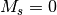
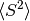

S¶
The value of the spin quantum number
is given by this option. The default is determined by the value of the multiplicity. This is used for two things: (1) determining the phase of the redundant half of the CI vector when the  component is used (i.e., MS0 =
TRUE), and (2) making sure the guess vector has the desired value of  (if CALC_S_SQUARED isTRUEand ICORE =1).
- Type: double
- Default: 0.0